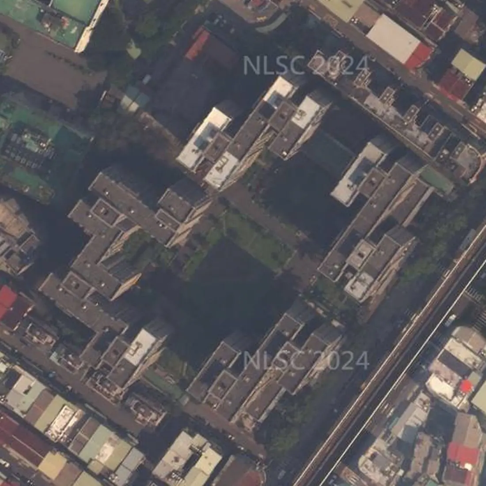

社區分析・文字版
健華新城可以買嗎？板橋文化路一段社區優缺點、車位、公設、管委會、格局、捷運與看屋重點
帶看健華新城時，買方最常問的就是下面這幾題。我把查過的資料整理在這篇，每一題第一段先講結論，跟上面的互動簡報（3D 模型、日照模擬、步行地圖）是同一份資料，數字都標了出處，實際狀況還是要以現場為準。
健華新城可以買嗎？先說結論
健華新城位於新北市板橋區文化路一段309號（單號），屬新埔生活圈，民國95年1月完工，地上14層。走到捷運新埔站（BL08）步行約304公尺、約4分鐘。優點是新埔站步行約 4 分鐘、超商約 2 分鐘、醫院約 2 分鐘、10 棟圍中庭、516 戶大型社區；要留意的是緊鄰文化路與捷運環狀線高架、每戶都有車位，含在公設內。
適不適合，要看你最在意的是什麼。下面把買方最常搜尋的問題一題一題整理，每題第一段先講結論，數字都標了出處，實際狀況還是以現場為準。

從空中看健華新城，再看中庭
健華新城是國防部興建的社區，使照登記 10 棟、地上 14 層、地下 2 層、全案 516 戶（一樓有部分辦公室與店舖，依使照附表），建物沿基地外圍排列，中間留出大面積中庭（設計建蔽率 33.6%）。社區東南側臨文化路一段（都市計畫寬度 40 公尺），文化路上方就是捷運環狀線高架；南側、西側多是 4、5 樓的老公寓和透天厝。航照拍攝時間早於現況，以現場為準。中庭照片是本店經手物件時拍的社區中庭花園與步道。
健華新城有車位嗎？車位有多少？
實價登錄交易中，坡道平面 28 筆、未標示車位 22 筆（車位含在公設內，非沒有車位）。
看屋時建議確認車位的產權登記方式、位置與進出動線，機車位是否需要另外申請。
電動車充電：可以先問管委會的事
- 社區規約或管理辦法有沒有「電動車充電設備設置與管理」的條文？可以提供影本嗎？
- 地下室有沒有公共充電車位？是用公電還是專用電表？
- 住戶在自己車位加裝的申請流程：要附哪些文件（電機技師或承裝業評估、施工切結、保險）？要管委會核准還是區權會決議？
- 住戶電表集中在地下室，還是在各樓層？（影響拉線難度）
充電設備能否加裝，需依社區規約、管委會或區分所有權人會議決議，以及電機技師與台電的用電評估而定。
健華新城公設有哪些？公設比多少？
公設有中庭花園、中庭步道、花架綠地；公設比約39%（依實價登錄面積計算，每戶都有車位，車位面積含在公設內）。
公設實際開放時間與使用規定，以管委會公告與規約為準，看屋時可以請管理室帶看。
健華新城實價登錄有幾筆成交？
查詢範圍：新北市板橋區文化路一段309號（單號）、總樓層 14 層，實價登錄共 50 筆（交易期間 2021-04-30～2026-09-09；已排除親友、特殊關係等特殊交易 12 筆）。
資料截至 115/10/21 公布（本社區最近一筆交易日 2026-09-09），之後的成交以實價登錄網最新公告為準；不同戶型、面積不宜直接比較。
健華新城有管委會嗎？管理方式怎麼樣？
管理方式：設有管理委員會（健華新城公寓大廈管理委員會，96/11/02核准報備）。
看屋時可以向管理室確認：社區規約、管理費收取方式、公共基金與近期公共修繕計畫，以及有沒有進行中的社區爭議。
健華新城格局有哪些？幾房、幾坪？
依實價登錄申報資料（截至 115/11/01 公布），健華新城有成交紀錄的住宅以3房最多（52筆），主建物約28.0～30.5坪。
| 房數 | 筆數 | 主建物坪數 |
|---|---|---|
| 3房 | 52 | 28.0～30.5 坪 |
| 4房以上 | 5 | 28.0～34.0 坪 |
| 其他 | 1 |
資料來源：內政部實價登錄，依申報的「建物現況格局」與「主建物面積」整理；為申報資料，可能與現況不同（例如改過隔間），不代表個別房屋。已排除特殊交易與預售屋，只計住宅用途；同一戶多次成交只計一次，只涵蓋有成交紀錄的戶。資料截至 115/11/01 公布，之後的新成交未納入，以內政部最新資料為準。坪數為主建物面積（不含附屬建物、陽台與公設），平方公尺換算成坪、取小數一位；筆數少於 3 筆的房數併入「其他」。僅供參考，實際以權狀與現場為準。
健華新城是哪一年完工的？幾層樓、幾戶？
健華新城民國95年1月完工、地上14層、地下2層、516戶、10棟、鋼筋混凝土造。
| 完工 | 民國95年1月 |
|---|---|
| 樓高 | 地上14層 |
| 地下層 | 2層 |
| 戶數 | 516戶 |
| 結構 | 鋼筋混凝土造 |
| 管理 | 設有管理委員會（健華新城公寓大廈管理委員會，96/11/02核准報備） |
| 臨路 | 文化路一段40米（都市計畫寬度） |
| 棟數 | 10棟 |
| 公設比 | 約39%（依實價登錄面積計算，每戶都有車位，車位面積含在公設內） |
| 公設 | 中庭花園、中庭步道、花架綠地 |
| 使用執照 | 95板使字第00024號 |
參考政府公開資料；實際以現場與地政登記為準。使用執照依新北市政府工務局使用執照存根影像。
健華新城到捷運站走路多久？
捷運新埔站（BL08）步行約304公尺、約4分鐘；捷運板橋站（BL07、Y16）5號出口步行約777公尺、約12分鐘；捷運新埔民生站（Y17）步行約803公尺、約12分鐘。
最近的公車站：致理科技大學步行約155公尺、約2分鐘。
步行距離資料來源：Google 地圖規劃建議路線，實際以現場為準。
健華新城日照好嗎？冬天曬得到太陽嗎？
這段日照是以臨文化路的東南向立面、7樓來示意，不是在講哪一戶喔。社區是10棟大樓圍著中庭，周邊多是低樓層的公寓，高樓層比較不受遮擋；低樓層、面中庭的那一側，比較容易被社區其他棟擋到，看屋時記得挑不同時段去看喔。
日照會因為面向、樓層、前後棟距差很多，看屋時建議上午、下午各去一次，站到窗邊看實際的採光與視野。
太陽位置：天文公式計算；日射：晴天直射理論值，不含散射與雲量；參考政府公開資料；以 7 樓示意，不代表特定戶別；結果為示意，實際以現場為準。
健華新城學區是哪裡？
依政府公開資料，健華新城的學區為新埔國小、中山國中、新埔國中，實際以教育局公告為準。
學區每年可能調整，入學前記得再向學校或教育局確認。
走路到學校：中山國中步行約597公尺、約9分鐘；文德國小步行約1,070公尺、約15分鐘（步行距離資料來源：Google 地圖規劃建議路線，實際以現場為準）。
健華新城是哪家營造廠蓋的？
使用執照（95板使字第00024號）登記的承造人（營造廠）是地樺營造工程有限公司。
健華新城生活機能方便嗎？超市、超商、市場走路多久？
步行可到：7-Eleven步行約119公尺、約2分鐘；全家便利商店步行約246公尺、約4分鐘；中英醫院步行約143公尺、約2分鐘。
- 7-Eleven（便利商店）：步行約119公尺、約2分鐘
- 全家便利商店（便利商店）：步行約246公尺、約4分鐘
- 中英醫院（醫療院所）：步行約143公尺、約2分鐘
步行距離資料來源：Google 地圖規劃建議路線，實際以現場為準。地點名稱與位置參考政府開放資料與連鎖店官方門市查詢。
健華新城優缺點有哪些？
優點：新埔站步行約 4 分鐘；超商約 2 分鐘、醫院約 2 分鐘；10 棟圍中庭、516 戶大型社區。要留意：緊鄰文化路與捷運環狀線高架；每戶都有車位，含在公設內。
新埔站步行約 4 分鐘
步行到板南線新埔站約 304 公尺、約 4 分鐘；板橋站（板南線、環狀線）約 12 分鐘，新埔民生站約 12 分鐘。
超商約 2 分鐘、醫院約 2 分鐘
7-Eleven 步行約 2 分鐘，全家便利商店約 4 分鐘、中英醫院約 2 分鐘、中山國中約 9 分鐘。學區：國小「新埔國小」，國中「中山國中」「新埔國中」，以教育局公告為準。
10 棟圍中庭、516 戶大型社區
使照登記 10 棟、地上 14 層、地下 2 層、全案 516 戶，一樓有部分辦公室與店舖（依使照附表），二樓以上都是住家；10 棟沿基地外圍排列，中間留有大面積中庭（基地約 17,624 平方公尺，設計建蔽率 33.6%）；鋼筋混凝土造，設有健華新城公寓大廈管理委員會。
健華新城缺點是什麼？看屋時要確認什麼？
看健華新城要先確認的是：緊鄰文化路與捷運環狀線高架；每戶都有車位，含在公設內。
緊鄰文化路與捷運環狀線高架
社區東南側就是文化路一段（都市計畫寬度 40 公尺），路的上方是捷運環狀線高架。看屋時建議在不同時段到臨文化路那一側，聽聽車流與列車經過的聲音。
每戶都有車位，含在公設內
健華新城每戶都有車位，但車位沒有獨立權狀，面積含在公設內，所以公設比看起來比較高。實價登錄 50 筆裡有 22 筆沒有標示車位，是登記方式的關係，不代表這幾戶沒有車位。
健華新城社區分析影片

▶ 【社區分析】健華新城｜板橋區文化路一段｜日照・交通・生活機能・實價登錄｜板橋阿陞聊房（YouTube）
健華新城附近社區
想一次比較位置，可以看板橋商圈地圖，或回首頁看全部社區分析。
健華新城所在區域的整理：新埔買房。
想看健華新城？
想知道健華新城目前有沒有房子在賣，歡迎聯絡。
☆預約看屋請聯絡：林津陞 0925-635-678
加官方 LINE：@banqiao.asheng，聊天室輸入「攻略」，系統自動傳送《買房避坑攻略》電子檔（約2萬字／38頁）
全國不動產板橋加盟店
經紀業｜非凡不動產有限公司
經紀人｜謝政峯（99）北縣字第002181號
營業員｜林津陞（99）登字第148103號
資料來源：參考政府公開資料（依政府資料開放授權條款使用）；地圖：© OpenStreetMap contributors（ODbL）；本店之前拍攝的社區照片。步行距離與日照為規劃與模擬結果，學區以教育局公告為準，房屋資訊仍須以現場、產權資料及正式文件為準。